原稿证据并非实现。严格比较仅针对不含新增入口的原设置基线。失败项如实保留。
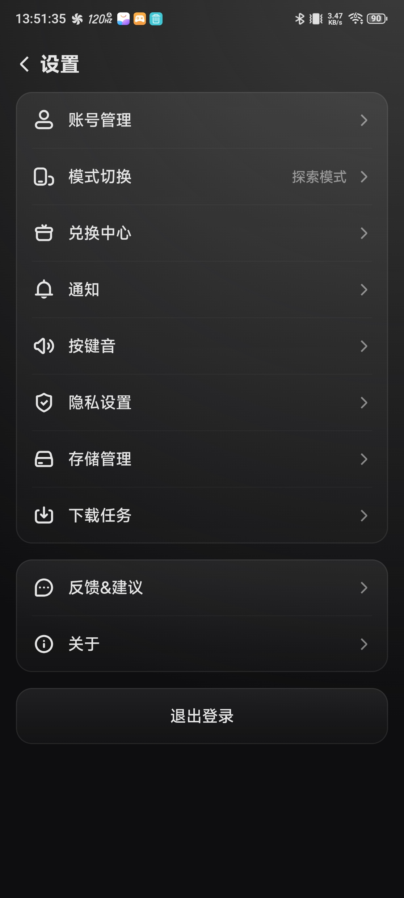
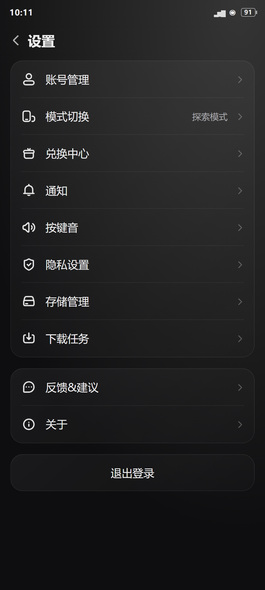
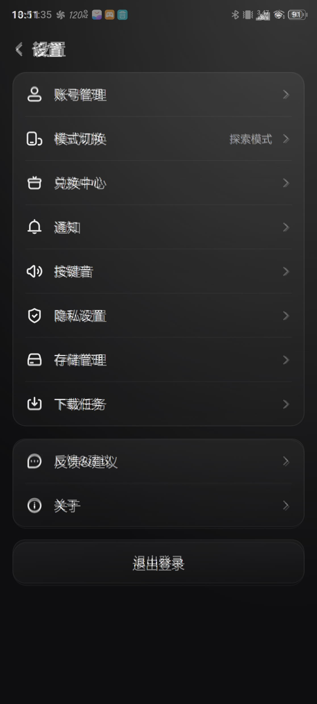
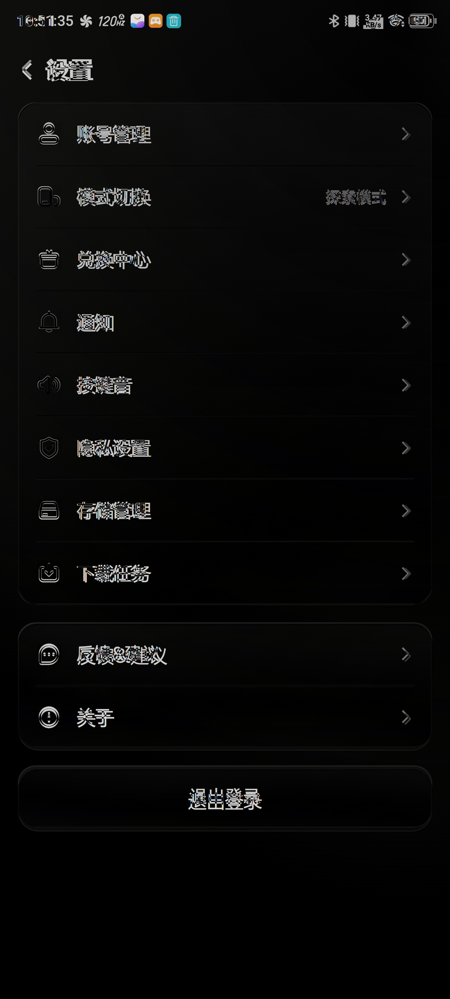
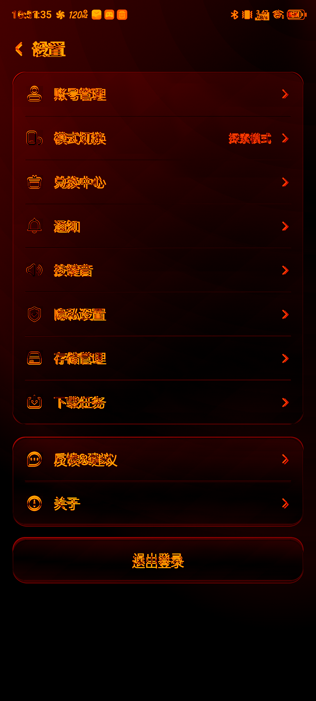
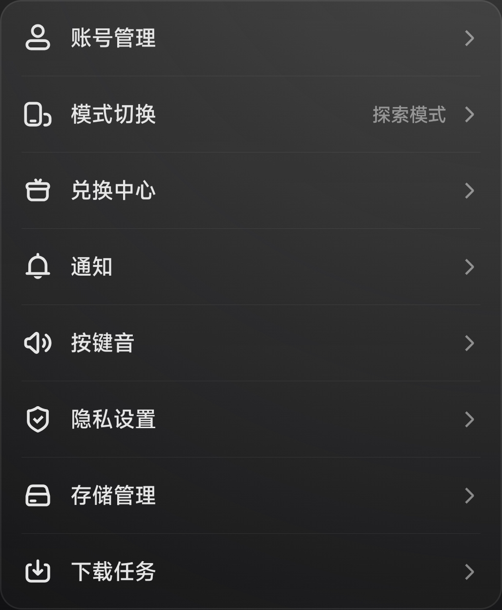
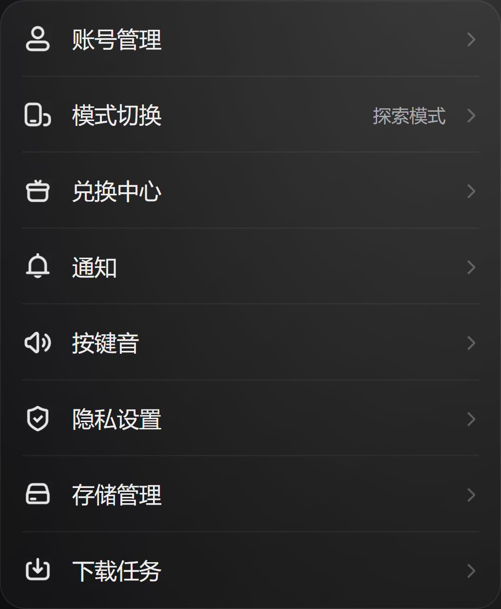
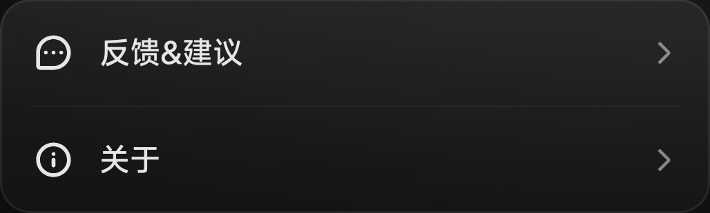
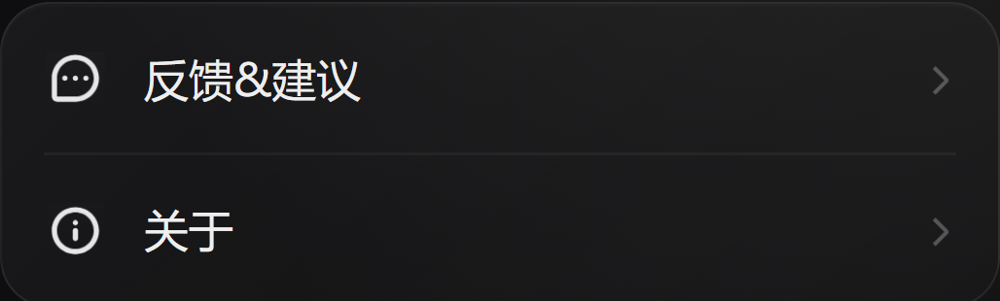
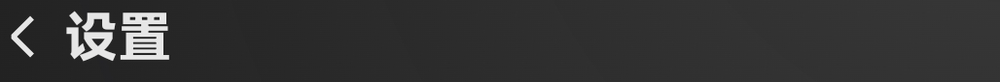
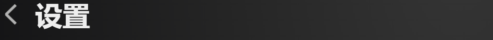
{
"nativeSize": [
1116,
2480
],
"method": "native RGB, no resize or preblur, Canny sigma=0, uniform 7x7 SSIM, CIEDE2000 P95",
"thresholds": {
"rgb": 95,
"edge": 95,
"ssim": 95,
"deltaE2000P95": 3,
"geometryPixels": 2
},
"page": {
"rgbSimilarity": 96.569,
"edgeXorSimilarity": 96.97,
"ssim": 90.283,
"deltaE2000P95": 4.806,
"pixelGatePassed": false
},
"components": {
"settings-main": {
"box": [
44,
254,
1072,
1502
],
"rgbSimilarity": 95.719,
"edgeXorSimilarity": 96.348,
"ssim": 89.678,
"deltaE2000P95": 5.238,
"pixelGatePassed": false
},
"settings-support": {
"box": [
44,
1546,
1072,
1856
],
"rgbSimilarity": 96.347,
"edgeXorSimilarity": 96.509,
"ssim": 88.221,
"deltaE2000P95": 4.739,
"pixelGatePassed": false
},
"header": {
"box": [
44,
139,
1072,
224
],
"rgbSimilarity": 93.862,
"edgeXorSimilarity": 97.626,
"ssim": 86.538,
"deltaE2000P95": 19.847,
"pixelGatePassed": false
}
},
"geometry": {
"sourceMain": [
44,
254,
1028,
1248
],
"actualMain": [
44.0625,
254.09375,
1027.875,
1248.125
],
"maxError": 0.125
},
"passed": false,
"manualReview": {
"status": "fail",
"functionalVisualReview": "新增入口、三选状态与深浅主题人工检查通过；严格基线仍失败，不声明像素一致",
"reviewedScreens": [
"portrait-dark.png",
"portrait-light.png",
"portrait-options.png",
"landscape-light.png"
],
"remaining": "Android字体、状态栏及色差未达严格门槛"
},
"limitations": [
"新增深色模式入口不参与原稿基线比较，baseline参数只隐藏新增行。",
"Android原字体和系统栏资源未取得，原稿文字、图标栅格差异未消除。",
"浅色主题、深色模式三选一内容、横屏为derived，无同版原稿，不声明像素一致。",
"新增入口无已登记图标，保留空图标位且标签与原行对齐。"
]
}